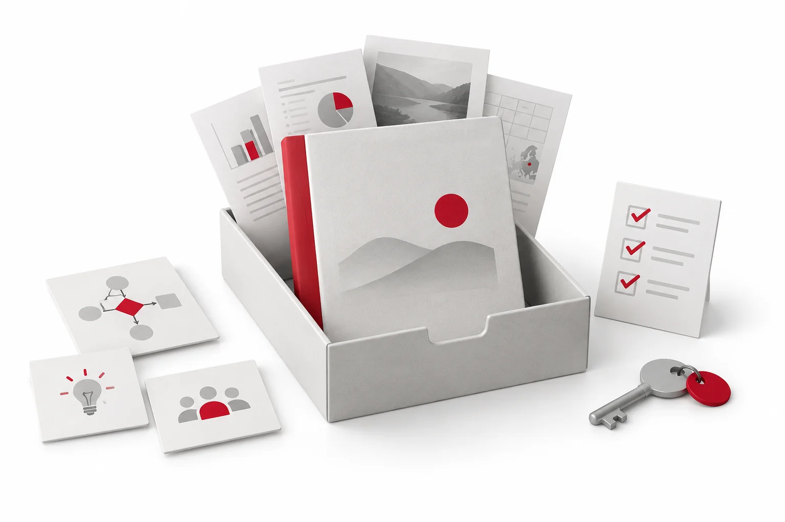
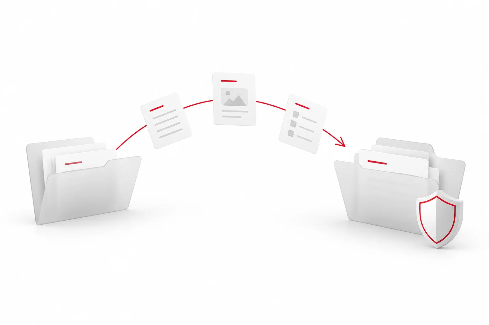

Dateien, Einheiten, Zeiträume und Quellenstände.
Datensicherung · Übergabe · Wiederanlauf
Datentransfer
Daten mitnehmen. Verantwortlich weiterarbeiten.
Wertvolle KI-Arbeit soll beim Wechsel von Konten, Tools oder Dienstleistern erhalten bleiben.
Ich plane mit meinen Auftraggebern, was gesichert wird, wie der Transfer gelingt und wer den Wiederanlauf freigibt.
01 / Was erhalten bleiben muss
Mehr als eine Kopie des Berichts.
Ein nutzbares Sicherungspaket enthält auch den Weg zum Ergebnis.

Modellangaben, Testfälle und bekannte Fehler.
Workflows, Konfiguration und Wissensbestand.
Code, Historie, Bilder und Betriebsanleitung.
Zuständigkeiten, Prüfprotokolle und Zugriffsrechte.
Zugänge getrennt schützen. Passwörter und Schlüssel gehören in eine geschützte Verwaltung – nicht in öffentliche Website-Dateien.
Geschützt aufbewahren
Sicherungen verschlüsseln und Zugriff begrenzen.
Getrennt sichern
Räumlich getrennte und offline isolierte Kopien vorsehen.
Wiederherstellung testen
Rhythmus, Aufbewahrung und Prüftermine vereinbaren.
Vom Backup zum Nachweis
- Kopie
- Test
- Freigabe
Wiederherstellen, prüfen und das Ergebnis dokumentieren.
Synchronisation allein ersetzt kein Sicherungskonzept: Auch Löschungen können synchronisiert werden. Grundlage: CNIL
02 / Kontrolliert von A nach B
Ein Transfer mit klaren Prüfpunkten.

Bestand auswählen
Inhalte, Rechte und Versionsstand bestätigen.
Export prüfen
Vollständigkeit, Format und sensible Inhalte kontrollieren.
Geschützt übertragen
Verschlüsselter Weg, berechtigte Empfänger, Protokoll.
Im Ziel testen
Inhalte, Zugriffe und Funktionen menschlich freigeben.
Einmalig
Datei-Transfer
ExportPrüfungImport
Ein abgegrenzter Bestand wird exportiert und im Ziel geprüft.
Regelmäßig
Schnittstelle (API)
ÜbertragenKontrollieren
Ein freigegebener Austausch mit Fehlerkontrolle und Protokoll.
Vor dem Wechsel: Änderungen seit dem Testexport nachführen, Umschaltzeitpunkt und Rückfallweg festlegen. Altbestände nach dem freigegebenen Aufbewahrungs- und Löschplan behandeln. Schutzmaßnahmen: EDPB
03 / Mein Vorgehen in der Beratung
In sechs Schritten zur geregelten Übergabe.
Vorbereiten
- 01Bestand
verstehen - 02Rechte & Ziele
klären - 03Sicherung
planen
Erproben & übergeben
- 04Testtransfer
durchführen - 05Wiederanlauf
erproben - 06Übergeben
& freigeben
- 01
Bestand verstehen
Systeme, Daten und Abhängigkeiten erfassen.
- 02
Rechte & Ziele klären
Nutzung, Verantwortung und Wiederanlaufziele festlegen.
- 03
Sicherung planen
Umfang, Rhythmus und Speicherorte bestimmen.
- 04
Testtransfer durchführen
Einen abgegrenzten Bestand übertragen und prüfen.
- 05
Wiederanlauf erproben
Aus der Sicherung nutzbar weiterarbeiten.
- 06
Übergeben & freigeben
Anleitung, Verantwortliche und Prüftermine übergeben.
Annette · Beratung
Analyse und Übergabe moderieren.
IT · Umsetzung
Technik einrichten und testen.
Auftraggeber · Freigabe
Fachlich prüfen und entscheiden.
Human-in-the-Loop: Datenumfang, Prüfergebnisse und Freigaben werden dokumentiert. Betrieb, Support, Kosten und Mitwirkung werden im Auftrag vereinbart.
04 / Drei Situationen aus meinem Projekt
Was beim Wechsel wirklich mitmuss.
Vom Bildungsaccount
in die eigene Umgebung
ExportTestimportPrüfung
Ein Export ist noch keine vollständige Kontomigration.
- Vor Zugangsende Exportrechte und Unterstützung klären.
- Dateien, Prompts und Konfigurationen einzeln erfassen.
- Im Zielkonto prüfen, was tatsächlich nutzbar ist. Kundendaten bleiben in freigegebenen Unternehmensumgebungen.
Mein Chatbot braucht
mehr als die Website.
WebsiteWorkflow / BackendKI & WissensquellenZugänge
Die Oberfläche kann erhalten bleiben, während der Dienst dahinter ausfällt.
- n8n-Workflow und benötigte Daten zusätzlich sichern.
- Eigene n8n-Umgebung oder alternativen Dienst einrichten und testen.
- FAQ als Ausweichlösung vorsehen. Sie ersetzt die KI-Funktion nicht. n8n-Dokumentation
Meine Projekt-Website
wieder veröffentlichen
Code + MedienHostingFunktionstest
Sicherung ermöglicht Wiederherstellung – keine garantierte Dauerverfügbarkeit.
- Code mit Historie, Bilder und Dokumente sichern.
- Hosting, Domain und externe Dienste dokumentieren.
- Aus der Sicherung veröffentlichen; Links, Downloads und Chatbot separat testen. GitHub-Dokumentation
05 / Wiederanlauf & Wirkung
Erledigt ist es, wenn wir weiterarbeiten können.
Nachweise vor der Freigabe
- Vereinbarter Bestand lesbar und vollständig.
- Wiederherstellung erfolgreich getestet.
- Inhalte, Zugriffe und Funktionen geprüft.
- Abweichungen bewertet und freigegeben.
- Anleitung und Verantwortliche übergeben.
Wie alt darf der letzte nutzbare Stand sein?
Vereinbarte Grenze mit dem tatsächlichen Sicherungsstand vergleichen.
Wie schnell muss die Arbeit weitergehen?
Zielzeit mit der gemessenen Wiederherstellungszeit vergleichen.
Eigenes Beratungskonzept; kein bereits belegter Kundenerfolg. Zielwerte und Prüfumfang werden je Auftrag vereinbart. Gesicherte Prompts und Modellangaben garantieren keine wortgleiche spätere KI-Ausgabe.
Quellen & Einordnung
- CNIL · Datensicherung – getrennte Kopien und Wiederherstellungstests.
- EDPB · Datensicherheit – Schutzbedarf, Zugriffe und Verschlüsselung.
- n8n · Export und Import – Workflows; Exporte vor Weitergabe auf Zugangsinformationen prüfen.
- GitHub · Repository sichern – Versionshistorie und zusätzliche Projektbestandteile.
Stand: 10. September 2026 · Konzept von Annette Adler. Anforderungen und Rollen werden für den konkreten Einsatz mit den zuständigen Funktionen geprüft.